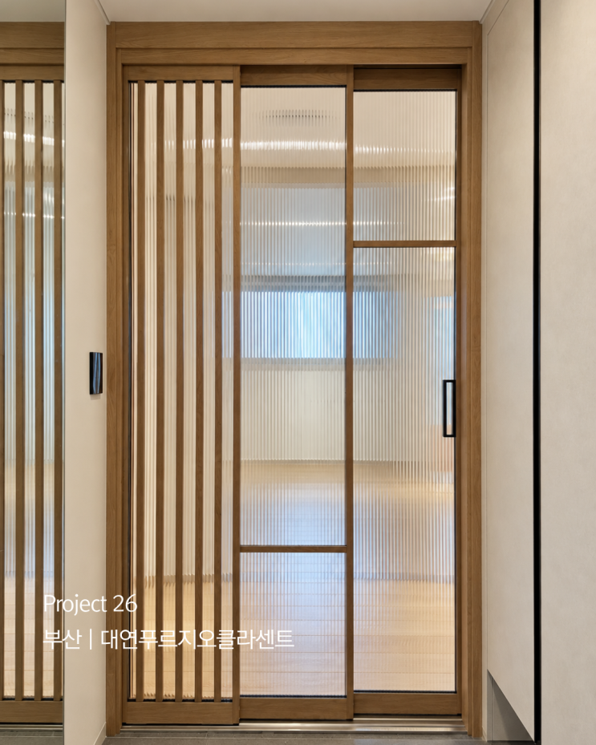
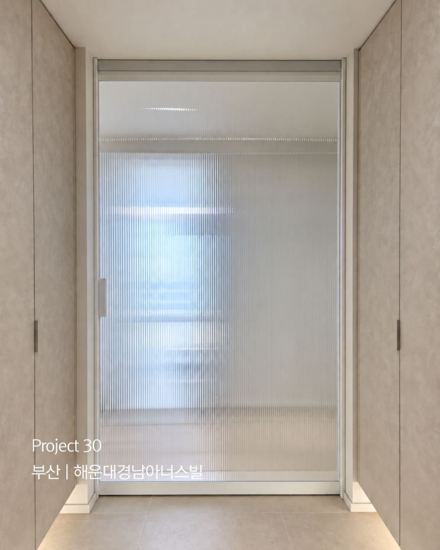
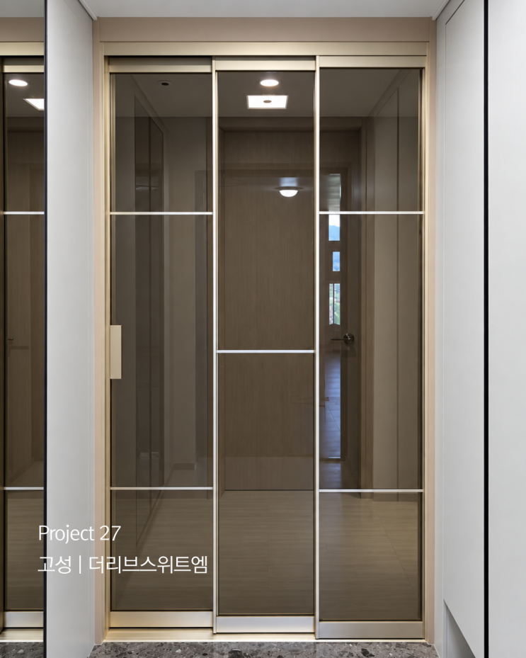

ABOUT MMD
중문 하나로 공간의 분위기와 가치를 완성합니다
MMD는 ‘MODERN MOOD DESIGN’이라는 이름처럼, 중문 하나로 공간의 분위기와 가치를 완성하는 인테리어 중문 전문업체입니다.
유리의 질감부터 프레임의 비례, 문이 열리는 방식까지 살피며 그 집에 어울리는 모습을 찾아갑니다. 중문은 한 번 설치하면 오랫동안 사용하는 제품이기에 디자인뿐만 아니라 내구성과 편의성, 안전성까지 꼼꼼하게 살펴야 합니다.
MMD는 고객님의 생활 방식과 설치 공간을 충분히 확인한 뒤 가장 적합한 제품을 정직하게 제안해 드립니다. 상담부터 현장 실측, 맞춤 제작, 시공까지 모든 과정을 세심하게 진행합니다.
시공 지역 부산 · 울산 · 경남 (창원 · 김해 · 양산 · 진해 · 고성 등)

MMD의 세 가지
-
01
주문 제작 전문
온라인에서 보신 중문 디자인의 약 90%는 MMD의 프레임을 활용해 비슷한 느낌으로 제작할 수 있습니다. 참고하신 사진이나 원하시는 이미지를 보내주시면 제작 가능 여부를 확인해 안내해 드립니다.
-
02
상담부터 시공까지 직접
상담부터 현장 실측, 맞춤 제작, 시공까지 모든 과정을 세심하게 진행합니다. 실측 내용을 바탕으로 최종 견적과 제작 일정을 안내해 드립니다.
-
03
현장 구조와 동선을 먼저
현장마다 다른 구조와 동선을 정확하게 확인해 시공 오차를 줄이고, 문이 부드럽게 작동할 수 있도록 작은 부분까지 꼼꼼하게 마감합니다.
PRODUCTS
현관 중문 시공 분야
프레임 색상과 유리, 손잡이, 문 형태를 조합해 공간에 맞는 중문을 주문 제작합니다.
-

원슬라이딩 중문
문 한 장을 옆으로 밀어 사용하는 방식으로, 문을 열었을 때 출입 공간을 넓게 사용할 수 있습니다.
- 디자인이 깔끔하고 개방감이 좋습니다
- 현관 폭과 신발장 위치에 맞춰 제작합니다
- 우드·화이트·블랙 등 프레임 색상 선택
-

3연동 중문
세 개의 문짝이 이어져 함께 움직이는 방식의 중문으로, 현관 폭에 맞춰 개방 폭을 조절할 수 있습니다.
- 문을 열었을 때 출입 공간을 넓게 확보
- 프레임 도장 또는 시트 마감 선택
- 투명·브론즈·모루 등 유리 조합
-

양개형 비대칭 중문
좌우 문짝의 폭을 서로 다르게 구성한 디자인입니다.
- 평소에는 폭이 넓은 주 출입문을 사용
- 큰 짐·가구 이동 시 보조문까지 함께 열어 사용
- 현관 구조에 맞춘 비율 설계
-

양개형 스윙 중문
좌우 두 짝이 열리는 양개형 방식으로, 기존 현관 인테리어와 어우러지게 마감합니다.
- 화이트·우드 등 프레임 톤 맞춤
- 모루유리 등 세로결 유리 조합
- 손잡이 디자인 선택
-

양개형 외도어
바깥쪽으로 열리는 양개형 구조로, 현관 폭이 넓은 공간에 어울립니다.
- 현관 폭에 맞춘 문짝 비율
- 화이트 도장 · 백유리 패브릭 필름 등 조합
- 실측 후 제작 가능 여부 안내
-

프레임 & 유리 맞춤
프레임 마감과 유리 종류를 조합해 공간 분위기에 맞춥니다.
- 프레임: 우드 시트 · 화이트/블랙/골드 도장 · 디아망 · 차콜 시트
- 유리: 투명 · 브론즈 · 모루 · 패브릭 · 미스트 강화유리
- 손잡이: 기본 손잡이 · 시트 처리 손잡이
PROJECTS
시공 사례
부산 · 울산 · 경남 지역에서 MMD가 완성한 현관 중문 시공 현장입니다. 사진을 클릭하면 크게 볼 수 있습니다.
전체 24개의 시공 사례
더 많은 시공 사례는 네이버 블로그에서 확인하실 수 있습니다.
CONTACT
문의
설치할 공간의 사진과 대략적인 가로·세로 크기, 원하시는 중문 디자인을 함께 보내주시면 더욱 빠르고 정확하게 안내해 드릴 수 있습니다. 디자인이나 유리 종류를 정하지 못하셨더라도 공간의 분위기와 사용 목적에 맞춰 편하게 상담해 드립니다.
blog.naver.com/mmdesign_kr